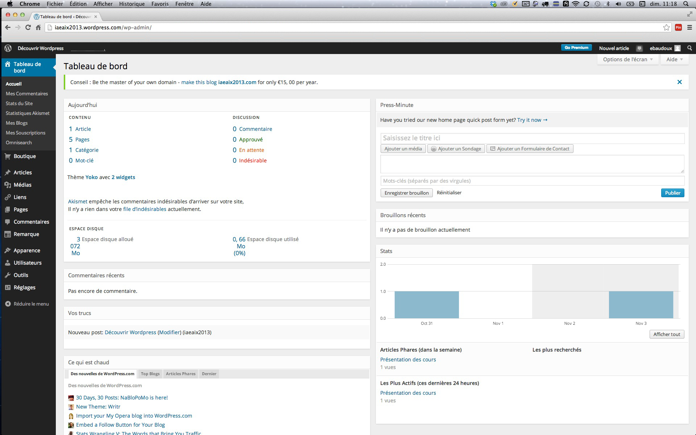
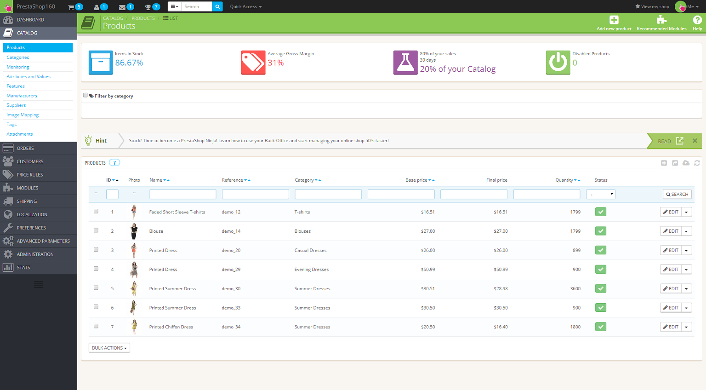
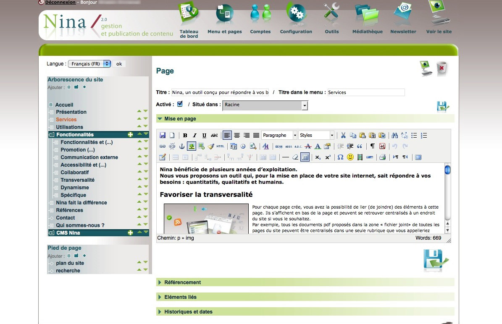

Admin On Rest
Tours JS 20170530
Rodrigo Reyes
Admin On Rest
- Création rapide de backoffice pour API Rest
- Open Source, Github, successeur de ng-admin
- Créé par Marmelab
Backoffice
- Indispensable, mais souvent peu de valeur
- Jamais de temps alloué
- Laborieux
- Aucun intérêt
Wordpress
Prestashop
Ninja CMS
Grav CMS

Usage
- Hack rapide pour mise en place rapide et temporaire
- Base pour un backoffice complet définitif
Exemple
Architecture
- React
- Entre le framework et le DSL
- Seule brique technique nécessaire: RestClient